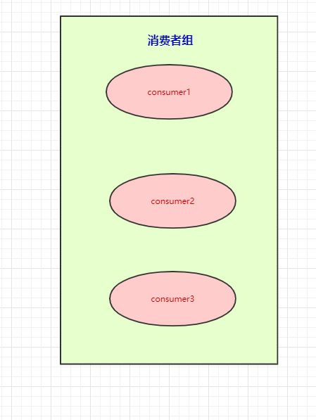

只有光头才能变强。
文本已收录至我的GitHub仓库，欢迎Star：https://github.com/ZhongFuCheng3y/3y
在这篇之前已经写过两篇基础文章了，强烈建议先去阅读：
众所周知，消息队列的产品有好几种，这里我选择学习Kafka的原因，无他，公司在用。
我司使用的是Kafka和自研的消息队列(Kafka和RocketMQ)改版，于是我就想学学Kafka这款消息队列啦。本篇文章对Kafka入门，希望对大家有所帮助。
本文知识点提前预览：
这篇文章花了我很长时间画图，目的是希望以最通俗易懂的方式带大家入门，如果觉得不错，希望能给我点个赞！
首先我们得去官网看看是怎么介绍Kafka的：
在收集资料学习的时候，已经发现有不少的前辈对官网的介绍进行翻译和总结了，所以我这里就不重复了，贴下地址大家自行去学习啦：
我之前写过的消息队列入门文章也提到了，要做一个消息队列可能要考虑到以下的问题：
下面我以Kafka为例对这些问题进行简单的解答，进而入门Kafka。
众所周知，Kafka是一个消息队列，把消息放到队列里边的叫生产者，从队列里边消费的叫消费者。
一个消息中间件，队列不单单只有一个，我们往往会有多个队列，而我们生产者和消费者就得知道：把数据丢给哪个队列，从哪个队列消息。我们需要给队列取名字，叫做topic(相当于数据库里边表的概念)
现在我们给队列取了名字以后，生产者就知道往哪个队列丢数据了，消费者也知道往哪个队列拿数据了。我们可以有多个生产者往同一个队列(topic)丢数据，多个消费者往同一个队列(topic)拿数据
为了提高一个队列(topic)的吞吐量，Kafka会把topic进行分区(Partition)
所以，生产者实际上是往一个topic名为Java3y中的分区(Partition)丢数据，消费者实际上是往一个topic名为Java3y的分区(Partition)取数据
一台Kafka服务器叫做Broker，Kafka集群就是多台Kafka服务器：
一个topic会分为多个partition，实际上partition会分布在不同的broker中，举个例子：
由此得知：Kafka是天然分布式的。
如果不了解分布式/集群，以及基本的分布式概念的同学，可以关注我的GitHub：https://github.com/ZhongFuCheng3y/3y
关键字：分布式、SpringCloud 保证能让你搞懂。觉得我写得不错，就给我点个赞！
现在我们已经知道了往topic里边丢数据，实际上这些数据会分到不同的partition上，这些partition存在不同的broker上。分布式肯定会带来问题：“万一其中一台broker(Kafka服务器)出现网络抖动或者挂了，怎么办？”
Kafka是这样做的：我们数据存在不同的partition上，那kafka就把这些partition做备份。比如，现在我们有三个partition，分别存在三台broker上。每个partition都会备份，这些备份散落在不同的broker上。
红色块的partition代表的是主分区，紫色的partition块代表的是备份分区。生产者往topic丢数据，是与主分区交互，消费者消费topic的数据，也是与主分区交互。
备份分区仅仅用作于备份，不做读写。如果某个Broker挂了，那就会选举出其他Broker的partition来作为主分区，这就实现了高可用。
另外值得一提的是：当生产者把数据丢进topic时，我们知道是写在partition上的，那partition是怎么将其持久化的呢？（不持久化如果Broker中途挂了，那肯定会丢数据嘛)。
Kafka是将partition的数据写在磁盘的(消息日志)，不过Kafka只允许追加写入(顺序访问)，避免缓慢的随机 I/O 操作。
上面balabala地都是讲生产者把数据丢进topic是怎么样的，下面来讲讲消费者是怎么消费的。既然数据是保存在partition中的，那么消费者实际上也是从partition中取数据。
生产者可以有多个，消费者也可以有多个。像上面图的情况，是一个消费者消费三个分区的数据。多个消费者可以组成一个消费者组。

本来是一个消费者消费三个分区的，现在我们有消费者组，就可以每个消费者去消费一个分区（也是为了提高吞吐量）
按图上所示的情况，这里想要说明的是：
前面讲解到了生产者往topic里丢数据是存在partition上的，而partition持久化到磁盘是IO顺序访问的，并且是先写缓存，隔一段时间或者数据量足够大的时候才批量写入磁盘的。
消费者在读的时候也很有讲究：正常的读磁盘数据是需要将内核态数据拷贝到用户态的，而Kafka 通过调用sendfile()直接从内核空间（DMA的）到内核空间（Socket的），少做了一步拷贝的操作。
有的同学可能会产生疑问：消费者是怎么知道自己消费到哪里的呀？Kafka不是支持回溯吗？那是怎么做的呀？
这里要引出offset了，Kafka就是用offset来表示消费者的消费进度到哪了，每个消费者会都有自己的offset。说白了offset就是表示消费者的消费进度。
在以前版本的Kafka，这个offset是由Zookeeper来管理的，后来Kafka开发者认为Zookeeper不合适大量的删改操作，于是把offset在broker以内部topic(__consumer_offsets)的方式来保存起来。
每次消费者消费的时候，都会提交这个offset，Kafka可以让你选择是自动提交还是手动提交。
既然提到了Zookeeper，那就多说一句。Zookeeper虽然在新版的Kafka中没有用作于保存客户端的offset，但是Zookeeper是Kafka一个重要的依赖。
通过这篇文章，文章开头那几个问题估计多多少少都懂一些啦。我来简要回答一下：
使用消息队列不可能是单机的（必然是分布式or集群）
Kafka天然是分布式的，往一个topic丢数据，实际上就是往多个broker的partition存储数据
数据写到消息队列，可能会存在数据丢失问题，数据在消息队列需要持久化(磁盘？数据库？Redis？分布式文件系统？)
Kafka会将partition以消息日志的方式(落磁盘)存储起来，通过 顺序访问IO和缓存(等到一定的量或时间)才真正把数据写到磁盘上，来提高速度。
想要保证消息（数据）是有序的，怎么做？
Kafka会将数据写到partition，单个partition的写入是有顺序的。如果要保证全局有序，那只能写入一个partition中。如果要消费也有序，消费者也只能有一个。
为什么在消息队列中重复消费了数据
凡是分布式就无法避免网络抖动/机器宕机等问题的发生，很有可能消费者A读取了数据，还没来得及消费，就挂掉了。Zookeeper发现消费者A挂了，让消费者B去消费原本消费者A的分区，等消费者A重连的时候，发现已经重复消费同一条数据了。(各种各样的情况，消费者超时等等都有可能...)
如果业务上不允许重复消费的问题，最好消费者那端做业务上的校验（如果已经消费过了，就不消费了）
这篇文章主要是Kafka入门，Kafka还涉及到别的概念，以及还有别的东西。在我感觉中，很多的面试题都跟配置有关，所以在解决某些问题的时候，先看看能不能通过现有配置解决掉（学多了框架，你就会发现很多官方的就已经支持解决了，你做的可能改改配置/参数就完事了）。
本已收录至我的GitHub精选文章，欢迎Star：https://github.com/ZhongFuCheng3y/3y
乐于输出干货的Java技术公众号：Java3y。公众号内有300多篇原创技术文章、海量视频资源、精美脑图，关注即可获取！
非常感谢人才们能看到这里，如果这个文章写得还不错，觉得「三歪」我有点东西的话 求点赞 求关注️ 求分享👥 求留言💬 对暖男我来说真的 非常有用！！！
创作不易，各位的支持和认可，就是我创作的最大动力，我们下篇文章见！